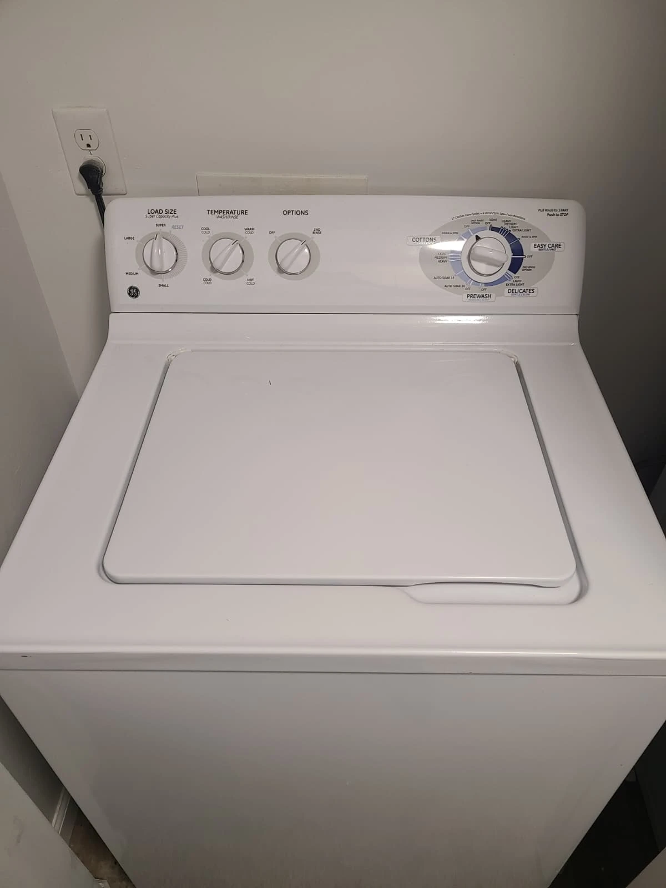
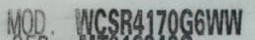
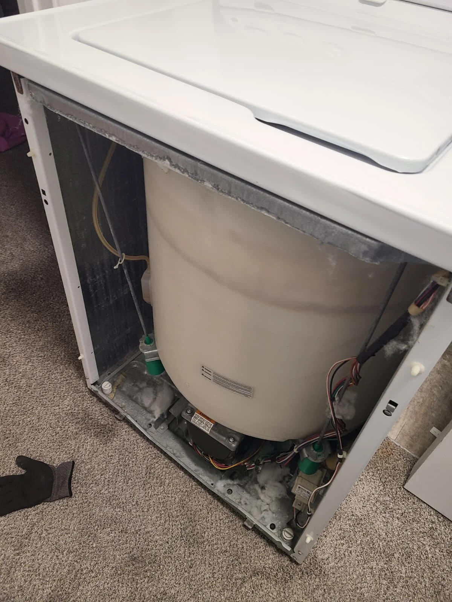
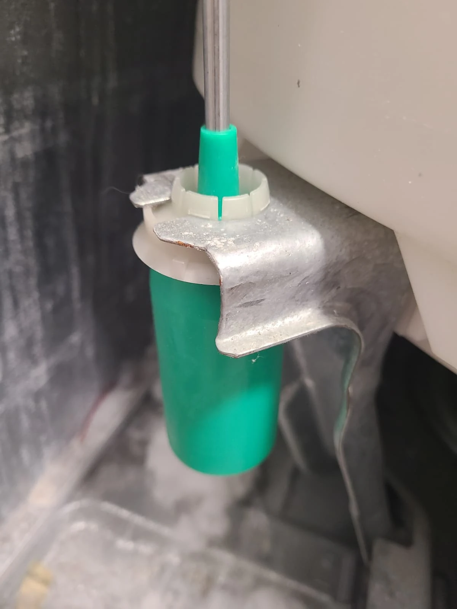
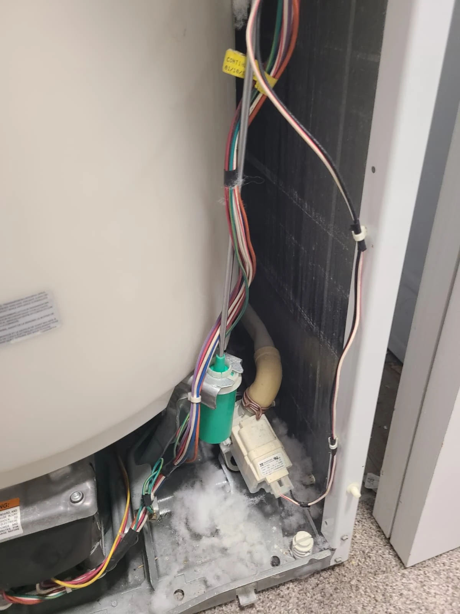
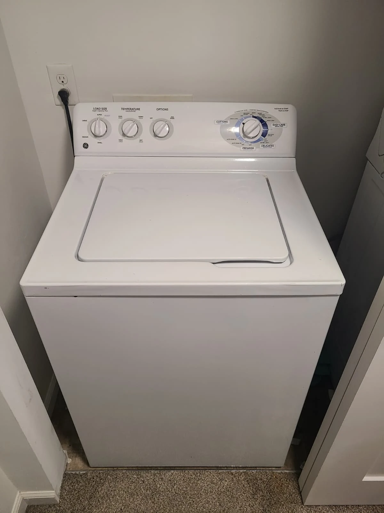

Loud Banging During the Spin Cycle
A homeowner in Fishers, Indiana, contacted Alex Appliance Repair because their GE washing machine was making a loud banging sound during spin. The customer described the tub moving far enough to strike the sides of the washer cabinet. This was the specific complaint that prompted the service visit.
We visited the home and diagnosed the washer. The findings pointed to suspension rods that required replacement. The photographs in this story follow that repair, from the assembled appliance and model identification to access inside the cabinet and the installed suspension assemblies.

GE Washer Model
The appliance label confirms the model as GE WCSR4170G6WW. The crop shown here is taken from the original service photograph. It isolates the model-number area so the identification is readable without publishing the serial number.
When arranging service for a noisy washer, share the appliance model and explain when the noise occurs. In this case, the important detail was that the banging happened during spin and involved the tub contacting the cabinet. Those details help describe the problem, but the repair decision still depends on inspecting the individual machine.

Diagnosis and Access to the Tub Suspension
On-site diagnosis identified suspension rods requiring replacement. Removing the front panel provided access to the tub and suspension area. The open-cabinet photograph shows the relationship between the large outer tub, the surrounding cabinet and the rod assemblies supporting the suspended mechanism.
This article documents the findings from this particular service visit. A washer making a similar sound is not automatically a suspension-rod repair. Describing the symptom accurately and inspecting the appliance are important before deciding which components need attention. Here, the diagnosed suspension problem was addressed by replacing the rods.
Suspension Rod Replacement
The suspension rods were replaced as part of the repair. The following photographs show an installed assembly in close-up and its position beside the washer tub. The close-up makes the lower mounting area visible, while the wider view places the component in context inside the cabinet.


These are photographs from the actual Fishers service visit, not just catalog illustrations. The highlighted diagram in the Visit Overview provides a separate view of the suspension layout. Together, the diagram and service photos explain which part of the washer was serviced without requiring the homeowner to identify or order components.

The Washer After Reassembly
After the suspension work, the washer was reassembled. The photograph shows the machine with its front panel back in place. This closes the visual sequence from the original noise complaint through access to the suspension and installation of the replacement assemblies.
The documented scope of this visit was a GE washer suspension rod replacement in Fishers. Keeping a record of the appliance model, reported symptom and work performed gives the homeowner a useful reference for future service. The assembled-machine photograph records the finished exterior; it is not a measurement of vibration or operating sound.
Questions About This GE Washer Repair
What problem did the customer report?
The tub was striking the washer cabinet during spin and making a loud banging sound.
What was replaced?
The diagnosis identified suspension rods requiring replacement, and the repair addressed those suspension assemblies.
Does banging during spin always mean the rods need replacement?
No. This is a record of one diagnosed repair, not a diagnosis for every washer with a similar noise. An inspection is needed to determine the appropriate work for another machine.
Do you provide washer repair in Fishers?
Yes. Alex Appliance Repair provides washer repair in Fishers, Indiana. Contact us with the model and a description of the problem to discuss a service visit.
GE Washing Machine Repair in Fishers, Indiana
If your GE washer bangs during spin or the tub hits the cabinet, describe those symptoms when contacting us. Include the model number when available so we can discuss the appliance and arrange the next step.
Explore our washing machine repair services, Fishers service coverage and recent repair stories for more examples of local appliance service.
Alex Appliance Repair is an independent appliance repair service operated by Aksenov LLC. Call (463) 248-8429 to discuss your washer.
Book washer repair in Fishers